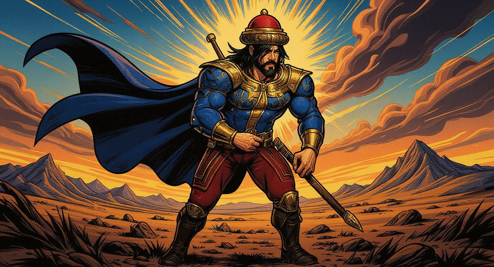
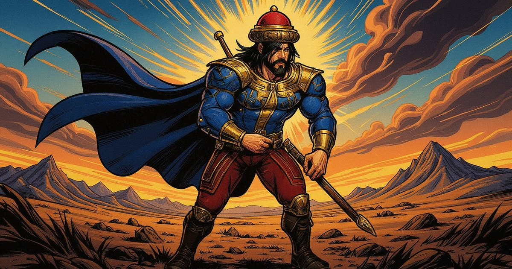
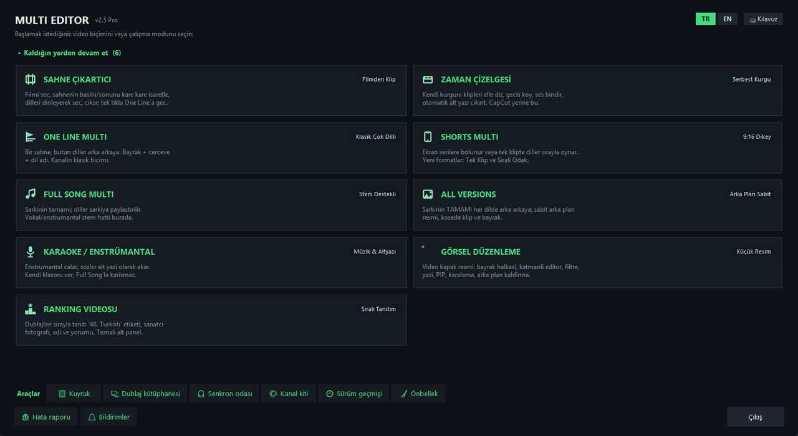

Koş, kay, vur
Üç şerit, inişli çıkışlı yollar, uçurumlar, kombolar ve bitirici vuruşlar. Öğrenmesi kolay, ustalaşması zor.

Türk destanları · koşu · efsanevi boss'lar
Destan Koşusu
Türk destanlarının yiğitleriyle Ötüken surlarından Erlik Han'ın yeraltı diyarına koş. Kay, zıpla, kılıcını savur; mitolojinin devleriyle yüzleş.
Tarayıcı için yapılmış hızlı bir 3B koşu oyunu. Tek başparmak yeter: şerit değiştirmek için kaydır, zıpla, kay, vurmak için dokun. Her bölüm Türk mitolojisinden bir boss'la biter.
Üç şerit, inişli çıkışlı yollar, uçurumlar, kombolar ve bitirici vuruşlar. Öğrenmesi kolay, ustalaşması zor.
Tepegöz, Albastı, yedi başlı Yelbegen, Dev Kara Kuş ve Erlik Han; her birinin kendine has saldırıları var.
Mete Han'dan Bumin Kağan'a, Dede Korkut'un Basat'ına kadar yiğitleri topla, rütbelerini yükselt, ordunu kur.
Yağız atla bozkırı aş, kanatlı Tulpar'la gök yolunda uç, gök yeleli kurdun izini sür.
Karşılaştığın her yiğit ve yaratık için kaynaklı kısa bir yazı. Oynarken arkalarındaki hikâyeyi öğren.
Hikâyenin ardından bütün bölgelerden geçen sonsuz bir koşu; günlük görevler, başarımlar ve seferler.
Oyunun şu anki sürümünden, tarayıcıda alınmış gerçek ekran görüntüleri.
Her yiğidin kendi kostümü, yetenekleri ve çizgi roman resmi var. Hikâyesini okumak için karta dokun.
Bugün yedi bölüm oynanabilir; beş bölüm daha yolda.
Oğuz Kağan gerçek kaynaklara dayanır: Uygurca Oğuz Kağan Destanı, Dede Korkut Kitabı, Orhun Yazıtları, Altay ve Yakut anlatıları. Tepegöz, Albastı ve Erlik Han gibi düşmanlar doğrudan bu hikâyelerden gelir; oyundaki Destan Kitabı da oyuncuya nereden geldiklerini anlatır.
Amacımız basit: önce eğlenceli olan, sonra genç oyuncularda bu zengin mirasa merak uyandıran bir oyun.
“Üstte gök çökmedikçe, altta yer delinmedikçe, Türk milleti, senin ilini ve töreni kim bozabilir?”
Oğuz Kağan Game, 2026'da Hacı Kadir Özmen'in İzmir'de kurduğu bağımsız ve tek kişilik bir stüdyo. Bütün projeler Claude Code ile geliştiriliyor: ne istediğimizi anlatıyor, birlikte deneyip iyileştiriyoruz; kod yapay zekâyla yazılıyor, ölçülüyor ve düzeltiliyor.
Hacı Kadir Özmen · Kurucu ve geliştirici, İzmir
kadir@oguzkagangame.com · YouTube: Scar Edits

Türk destanlarının yiğitleriyle, her tarayıcıda oynanan ücretsiz bir 3B koşu oyunu.
Oyna
Bir sahnenin onlarca dildeki resmi dublajını tek bir çok dilli videoya çeviren masaüstü kurgu stüdyosu: her dilin klibini çıkarır, ses senkronunu ölçüp düzeltir, bayrak, çerçeve ve dil adını ekler, geçişlerle birleştirir. Elle yaklaşık 2 saat süren bir video artık yaklaşık 30 dakikada hazır.
Çok dilli kanalımız: aynı sahne, birçok dilde arka arkaya. Bütün videolar Multi Editor ile hazırlanıyor.
YouTube'da izle